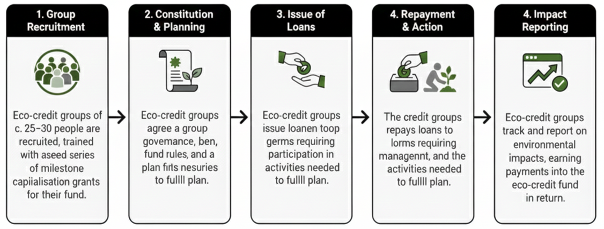

<title>Greenfi Approach</title>
<meta name="description" content="Community eco-credit is a methodology that creates incentives for 
voluntary ecosystem protection and restoration. Since 2017, it has been tested at pilot sites and documented in the Greenfi White Paper.">


<section id="insight">
  <h2><i data-lucide="blocks"></i>Approach</h2>


  <h3><i data-lucide="leaf"></i> Community eco-credit methodology</h3>

  <p>
    <strong>“Community eco-credit” is an experimental, interdisciplinary methodology
    for set-up of locally owned and managed green revolving credit facilities</strong>. 
    The methodology places a green financial instrument in the hands of informal financial self-help groups and is 
    designed to create economic and behavioural incentives for individuals to participate in voluntary,
    self-determined actions which protect or restore vital ecosystems. 
  </p>
   <p>
  <strong>Detailed information about the methodology can be found in the 
  <a href="assets/docs/whitepaper.pdf" target="_blank">Greenfi White Paper</a></strong>. 
  It explains the methodology's benefits, costs, risks, and the trade-offs created by 
  using the approach. The white paper also highlights what is unproven or not yet known, 
  and sets out the key principles that should ideally be followed when using 
  community eco-credit and the reasons for them.
</p>
  <p>
    <strong>Since 2017, the methodology has been tested at five pilot sites</strong>. 
    Early results indicate that, with sufficient support, members of participating groups 
    increase their contribution to ecological restoration and protection activities, 
    repay loans, steadily increase their funds and gain experience in financial and 
    environmental management. In our theory of change, this activity contributes to the 
    building of community environmental, financial and social health.
  </p>

 


  <h3><i data-lucide="users-2"></i> What is an eco-credit group?</h3>


  <p>
    
    <strong>Community eco-credit groups are self-managed community groups of approximately 
    30 people which own and  run a revolving credit fund which is loaned among group members.</strong> 
    Groups include requirements for nature protection and restoration in loan terms. 
    Detailed descriptions of the groups, their composition and governance can be found in the 
    White Paper. 
  </p>

  
  <h3><i data-lucide="workflow"></i> 5-Step Approach to Setup of Eco-Credit Groups</h3>

<p>The Greenfi Community Eco-Credit set-up methodology outlines a 5-step approach, 
  applicable to both newly formed and pre-existing groups

</p>



  <p>
  <a href="#problem" data-section="problem" class="cta-link">
    Continue to Problem Definition
  </a>
  </p>
</section>
